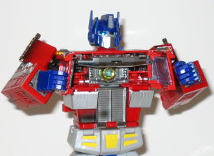
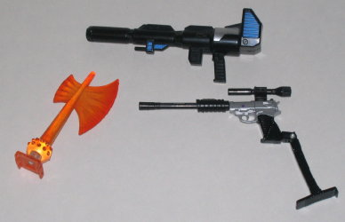

2004 is the 20th anniversary
for the Transformers (they first started to hit toy shelves in 1984), so
to celebrate, Hasbro released a 20th Anniversary Edition of the legendary
G1 Optimus Prime. No holds barred, no feature too trivial- this was intended
to be the ultimate Optimus Prime, and as you'll see as you read further,
I think they succeeded. Since he's packaged in robot mode, and it's also
the mode with the most features, I'm going to break from tradition and
review that mode first.
Optimus Prime's robot
mode is spot-on with the show version in every way- well, except for the
smokestacks on his shoulders, which were shortened for safety regulations.
But to have them comply with safety regulations AND still be as long as
they were in G1, they'd have to be overly large, so I can see why they
did this. Prime's proportions and looks definitely represent the best of
what G1 had to offer, and his articulation is nothing short of fantastic.
He can move at the head, the shoulders (at three points), the elbows, the
wrists, the waist, the hips (at two points), the knees (at two points),
the ankles, and yes, even his fingers can move individually two, albeit
only at one point on each finger instead of two. But to make the fingers
both solid and articulated at two points, they'd have to oversize the hands,
so again, it was a good decision. My toy in particular has a problem with
the ankle joints, though- one of them pops off way too easily. But this
doesn't appear to be a widespread problem. His legs, being made of diecast
metal as they are, are also VERY heavy, so the knee joints tend to be a
bit floppy, although to be fair, there's practically no joint that feasably
would have been able to withstand such heavy lower legs without being a
pain to rotate back and forth anyways. So it's a minor problem. One of
the best parts about Prime's joints, though, is that many have miniature
working hydraulic cylinders working them- definitely a high point, and
makes him look all the more mechanical. Prime is also loaded with features,
and amazingly, none of them interfere with the core figure at all. For
starters, he's got flip-up wrist communicators on each of his arms- the
one on his right arm has a picture of Starscream on it, while the one on
his left arm has Bumblebee on it. And they both have little miniature keypads
on them for Optimus to "type out commands", too- definitely a cool feature.
Like
Armada Prime
, 20th Anniversary Prime also
has a "talking" feature- press a button on the top of his head and his
mouthplate moves up and down. If you press up on his feet, the mini-vents
on his lower legs will flip up, and although it's a nifty feature, I'm
not really sure what it's for... By far, though, Prime's coolest gimmick
is his chest cavity- entirely show-accurate, and it opens up to reveal
the Matrix! This Matrix can be taken out and even pried partially apart
by Optimus, but it's VERY difficult to get out, so I just prefer to leave
it in there. Press the button on Optimus shoulder, and a powerful light
illuminates the Matrix! I can almost hear the song "You've Got the Touch"
in the background... Prime also comes with his fair share of weapons. You
have three to choose from; you can give him his "classic" blaster; push
in one of his hands and then attach an Energon Axe piece to it, making
his arm a weapon in itself; or you can have him old a miniature gun-mode
Megatron, completel with detachable sniper pieces. All make Prime look
even cooler, although they aren't storable in either mode, so be sure you
have a little baggy in handy to put them in when they're not in use.


You can't really have
that good of a robot mode, make the toy fully transformable, and then not
give it a very complex transformation, so be warned, it takes a good while
to transform 20th Anniversary Prime. For the most part, though, pieces
don't break off during the transformation, so he stays pretty solid. The
sole exception to this is the piece that covers up his head in from the
back in vehicle mode- it tends to snap off too easily when you're flipping
the head around, although it can be put back on in a snap.
Prime's vehicle mode
is definitely secondary to his robot mode, as it's not a completely accurate
representation of a semi-truck, but it's admirably close when you consider
his robot mode, and it's still great. A few oddities are noticeable, such
as the lack of real doors into the interior (just silver lines and detailing
in the shape of a door), and the robot feet are noticeably sticking out
the end of the cab. The robot waist is also visible behind the front half
of the cab. But, surprisingly enough, that's it- everything else is pretty
darned close to a model truck. He's got headlights, see-through windows,
rubber tires, a chrome bumper- the works. His wheels also actually have
spring suspension, so they roll VERY well. And hey, they've even got the
original toy's DESERT DOG molded on their sides! That's a really cool nod,
if you ask me. And there's plenty of mechanical detailing even behind the
wheels, which shows you just how much this guy's got on him. He's also
got a small hole near the rear end that I can only assume is for the original
G1 Optimus'
trailer, if you so desire to attach
it to this masterpiece. It'll definitely look small when compared to the
truck cab, though, which is why I haven't bothered. Another amazing thing
about this mode is that his Matrix cavity is no longer inside of his chest
(it's moved into the stomach area behind the grill during the transformation).
So there's actually a seat if you look inside the windows- no robot extras
there. Now THAT is thinking ahead, ladies and gentlemen.
20th Anniversary Optimus
Prime is a great toy in both modes, and he's loaded with tons of features
that don't interfere with the actual figure at all. He's one of the best
Transformers ever, actually. The hefty price tag can be a definite deterrant,
though, and he's got a complicated transformation so I wouldn't recommend
him for collectors under a decade old or those who aren't particularly
enthralled with the original Transformers series. For most Transfans, though,
it's hard to find a Transformer I can recommend more than this guy.
ADDENDUM: In 2006, for the 20th Anniversary of the Transformers Movie, this Optimus Prime toy was again released, this time in different packaging, a slightly different, slightly brighter color scheme without the battle damage, a blue instead of a black gun, much of the chrome gone and replaced with silver/gold paint, and a new stand with images of the Matrix and the Autobot symbol that can say different phrases from the movie. However, they aren't said by Peter Cullen, the voice of Optimus Prime in said movie, but just by some Hasbro guy-- a pretty big dissapointment. The different phrases are the stickers on his comlinks are also different, with a picture of Grimlock on one and Megatron on the other, and the light in his chest is now blue instead of white. Beyond these few minor changes, this re-release of Optimus Prime is the same as his 2004 version.
Optimus Prime
FUNCTION: Autobot Commander
MOTTO: "Freedom is the right of all
sentient beings."
Optimus Prime and his Autobots captured
the hearts and minds of a generation. He marched at the head of an army
of giants mechanical protectors from beyond the stars whose only goal
was the preservation of life and freedom for all creatures against the
evil forces of the Decepticons. Twenty years ago, that battle against evil
reached its greatest pitch, and Optimus Prime exemplified heroism and sacrifice
in the animated adventure Transformers: The Movie.
Strength: 10.0
Intelligence: 10.0
Speed: 6.0
Endurance: 10.0
Rank: 10.0
Courage: 10.0
Fireblast: 8.0
Skill: 10.0
Review by Beastbot